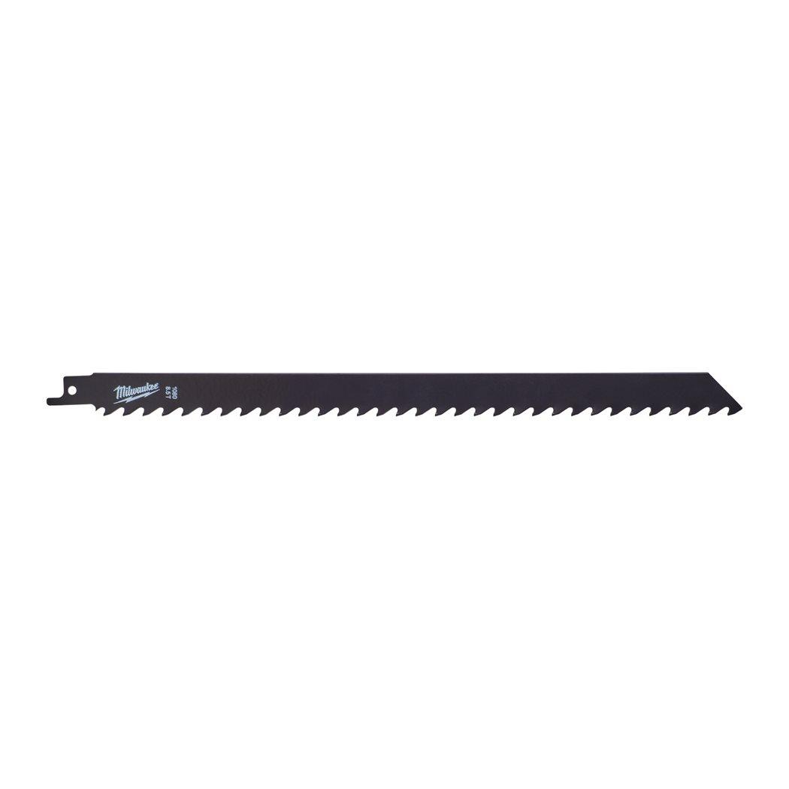

| Blade length (mm) | 305 |
| Material type | TC |
| Materials suited for | Cast Iron |
| Max. cutting capacity aerated concrete (mm) | 10 - 250 |
| Max. cutting capacity cast iron pipe (mm) | - |
| Max. cutting capacity fibre glass (mm) | 6 - 150 |
| Max. cutting capacity metal pipe ⌀ (mm) | - |
| Max. cutting capacity red brick (mm) | 10 - 250 |
| Pack quantity | 1 |
| Ref. No. | S1241HM |
| Article Number | 48001080 |
| EAN | 045242079865 |